자동차정비기사 (2021-08-14 기출문제)
1과목: 일반기계공학
1. 유압제어 회로에 사용되는 밸브 중 압력 제어 밸브가 아닌 것은?
- 카운터 밸런스 밸브
- 릴리프 밸브
- 시퀀스 밸브
- 교축 밸브
(정답률: 62%)

2. 마우러 조직도에서 탄소와 함께 주철의 조직관계를 나타내고 원소이며, 주철의 결정입자를 조대화하고 유동성을 좋게 하는 것은?
- 인
- 황
- 규소
- 망간
(정답률: 54%)
3. 지름 d, 길이 Z인 환봉이 압축하중 P가 작용하여 지름이 d0로 변했을 때 이 환봉의 푸아송 비는? (단, E는 세로탄성계수이다.)
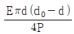
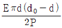
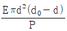
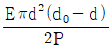
(정답률: 41%)
4. 지름이 D인 원형축의 중심에 높이 h, 폭 6인 직사각형 단면인 구멍이 축의 도심에 뚫린 경우, 단면 도심축에 대한 단면 2차 모멘트를 구하는 식은?
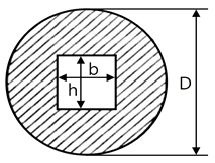
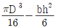
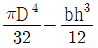
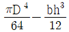
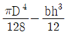
(정답률: 39%)
5. 일반적으로 베어링 재료로 사용하지 않는 것은?
- 켈밋 합금
- 배빗 메탈
- 인바
- 화이트 메탈
(정답률: 70%)
6. 부재에 작용하는 수직응력에 의한 탄성에너지(kJ)를 구하는 식은? (단, P : 하중, L : 길이, A : 단면적, E : 세로탄성계수이다.)
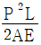
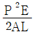
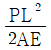
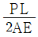
(정답률: 38%)
7. 유체기계 관련 이론 중 베르누이 방정식이 적용되는 가정으로 틀린 것은?
- 적용되는 임의의 2점은 같은 유선상에 있다.
- 점성력이 존재하는 유체 흐름이다.
- 정상상태의 유체 흐름이다.
- 비압축성 유체 흐름이다.
(정답률: 45%)
8. 나사의 효울(η)을 나타내는 식은? (단, α : 리드각, ρ : 마찰각이다.)
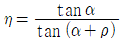
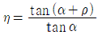
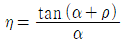
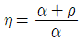
(정답률: 40%)
9. 축계 기계요소 중 축과 보스에 작은 삼각형의 키와 홈을 판 후 고정시킨 것은?
- 케네디 키
- 우드러프 키
- 세례이션
- 스플라인
(정답률: 33%)
10. 선반에서 사용하는 단동척에 대한 설명 으로 옳은 것은?
- 조(jaw)가 각각 움직이므로 불규칙한 형상의 공작물 고정에 편리하다.
- 조(jaw)가 동시에 움직이는 구조로서 원형이나 육각형의 공작물 고정에 편리하다.
- 콜릿을 이용하여 자동선반, 터릿선 반, 시계선반 등에 사용되는 척이다.
- 전자석을 이용하여 장·탈착이 쉽도록 하며 대량생산에 주로 사용되는 척이다.
(정답률: 37%)
11. 압연공정에서 압하율을 크게 하기 위한 방법으로 틀린 것은?
- 지름이 작은 롤을 사용한다.
- 롤 회전수를 늦춘다.
- 압연재를 뒤에서 밀어준다.
- 압연재의 온도를 높여준다.
(정답률: 45%)
12. 보의 처짐량을 구하는 일반적인 방법이 아닌 것은?
- 중첩법을 이용하는 방법
- 탄성에너지를 이용하는 방법
- 면적모멘트를 이용하는 방법
- 처짐곡선의 비선형방정식을 이용하는 방법
(정답률: 41%)
13. 코일 스프링에서 소선의 지름을 d, 코일의 평균 반지름을 R이라 할 때, 2R/d 이 의미하는 것은?
- 스프링 상수
- 스프링 지수
- 스프링 부하계수
- 스프링 수정계수
(정답률: 47%)
14. 주조품을 제조하기 위한 모형 중 코어 모형을 사용해야 하는 주물로 적합한 것은?
- 골격형 주물
- 크기가 큰 주물
- 외형이 복잡한 주물
- 내부가 비어있는 주물
(정답률: 50%)
15. 1000rpm으로 95.5N·m의 비틀림 모멘트를 전달하는 회전축에서 전달하는 동력(㎾)은?
- 1
- 2
- 10
- 20
(정답률: 49%)
16. 용접할 2개의 금속 단면을 적당한 거리에 놓고 서서히 접근 시키면서 대전류를 통하여 강한 압력으로 용접하는 것은?
- 시임 용접
- 업셋 용접
- 프로젝션 용접
- 플래시 용접
(정답률: 49%)
17. 내부식성과 내마모성이 우수하며 베어링, 선박용 부품 및 스프링 재료로 사용이 가능한 구리합금은?
- 6－4황동
- 인청동
- 하이드로날륨
- 두랄루민
(정답률: 39%)
18. 체인전동에서 체인 휠이 매분 500회전, 피치가 12.7mm, 스프로킷 흴 잇수가 20일 때 이 체인의 평균 속도(m/s)는 약 얼마인가?
- 1.46
- 2.13
- 3.24
- 5.07
(정답률: 21%)
19. 터보형 펌프 중 원심 펌프와 축류 펌프의 중간적인 형상을 하고 있으며 소형 경량으로 할 수 있고 양정의 변화가 심한 경우에도 유량의 변화가 적은 펌프는?
- 사류 펌프
- 특수 펌프
- 왕복 펌프
- 회전 펌프
(정답률: 49%)
20. 연삭가공에서 숫돌 면의 표면층을 깎아 떨어뜨려서 절삭성이 불량해진 숫돌면에 새롭고 날카로운 날 끝을 발생시키는 작업은?
- 로딩
- 글레이징
- 트루잉
- 드레싱
(정답률: 53%)
2과목: 기계열역학
21. 어느 이상기체 2㎏이 압력 200kPa, 온도 30℃의 상태에서 체적 0.8m3를 차지한다. 이 기체의 기체상수[kJ/(㎏·K)]는 약 얼마 인가?
- 0.264
- 0.528
- 2.34
- 3.53
(정답률: 32%)
22. 어느 발명가가 바닷물로부터 매시간 1800kJ의 열량을 공급받아 0.5㎾ 출력의 열기관을 만들었다고 주장한다면, 이 사실은 열역학 제 몇 법칙에 위배되는가?
- 제0법칙
- 제1법칙
- 제2법칙
- 제3법칙
(정답률: 42%)
23. 500℃와 100℃ 사이에서 작동하는 이상적인 Carnot 열기관이 있다. 열기관에서 생산되는 일이 200㎾이라면 공급되는 열량은 약 몇 ㎾인가?
- 255
- 284
- 312
- 387
(정답률: 20%)
24. 외부에서 받은 열량이 모두 내부에너지 변화만을 가져오는 완전가스의 상태변화는?
- 정적변화
- 정압변화
- 등온변화
- 단열변화
(정답률: 34%)
25. 질량이 m이고 한 변의 길이가 a인 정육면체 상자 안에 있는 기체의 밀도가 ρ이라면 질량이 2m이고 한 변의 길이가 2a인 정육면체 상자 안에 있는 기체의 밀도는?
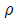
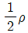
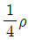
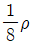
(정답률: 40%)
26. 8℃의 이상기체를 가역단열 압축하여 그 체적을 1/5로 하였을 때 기체의 최종 온도(℃)는? (단, 이 기체의 비열비는 1.4이다.)
- -125
- 294
- 222
- 262
(정답률: 15%)
27. 고열원의 온도가 157℃이고, 저열원의 온도가 27℃인 카르노 냉동기의 성적계수는 약 얼마인가?
- 1.5
- 1.8
- 2.3
- 3.3
(정답률: 32%)
28. 그림과 같이 다수의 추를 올려놓은 피스톤이 끼워져 있는 실린더에 들어있는 가스를 계로 생각한다. 초기 압력이 300kPa이고, 초기 체적은 0.⑤m3이다. 압력을 일정하게 유지하면서 열을 가하여 가스의 체적을 0.2m3으로 증가시킬 때 계가 한 일(kJ)은?
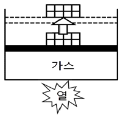
- 30
- 35
- 40
- 45
(정답률: 34%)
29. 다음 그림은 이상적인 오토사이클의 압력(P)-부피(V)선도이다. 여기서 "ㄱ"의 과정은 어떤 과정인가?
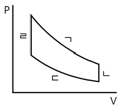
- 단열 압축과정
- 단열 팽창과정
- 등온 압축과정
- 등온 팽창과정
(정답률: 54%)
30. 카르노 열펌프와 카르노 냉동기가 있는데, 카르노 열펌프의 고열원 온도는 카르노 냉동기의 고열원 온도와 같고, 카르노 열펌프의 저열원 온도는 카르노 냉동기의 저열원 온도와 같다. 이때 카르노 열펌프의 성적계수(COPHP)와 카르노 냉동기의 성적계수(COPR)의 관계로 옳은 것은?
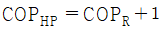
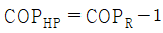
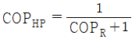
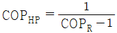
(정답률: 37%)
31. 다음 중 그림과 같은 냉동사이클로 운전할 때 열역학 제1법칙과 제2법칙을 모두 만족하는 경우는?
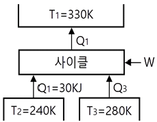
- Q1＝100kJ, Q3＝30kJ, W＝30kJ
- Q1＝80kJ, Q3＝40kJ, W＝10kJ
- Q1＝90kJ, Q3＝50kJ, W＝10kJ
- Q1＝100kJ, Q3＝30kJ, W＝40kJ
(정답률: 29%)
32. 열전도계수 1.4W/(m·K), 두께 6mm 유리창의 내부 표면 온도는 27℃, 외부 표면 온도는 30℃이다. 외기 온도는 36℃이고 바깥에서 창문에 전달되는 총 복사열 전달이 대류열전달의 50배라면, 외기에 의한 대류열전달계수[W/(m2·K)]는 약 얼마인가?
- 22.9
- 11.7
- 2.29
- 1.17
(정답률: 24%)
33. 절대압력 100kPa, 온도 100℃인 상태에 있는 수소의 비체적(m3/㎏)은? (단, 수소의 분자량은 2이고, 일반기체상수는 8.3145kJ(kmol·K)이다.)
- 31.0
- 15.5
- 0.428
- 0.0321
(정답률: 30%)
34. 1㎏의 헬륨이 100kPa 하에서 정압 가열 되어 온도가 27℃에서 77℃로 변하였을 때 엔트로피의 변화량은 약 몇 kJ/K인가? (단, 헬륨의 엔탈피(kJ/㎏)는 아래와 같은 관계식을 가진다.)
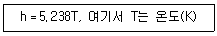
- 0.694
- 0.756
- 0.807
- 0.968
(정답률: 24%)
35. 밀폐시스템이 압력(P1) 200kPA, 체적(V1) 0.1m3인 상태에서 압력(P2) 100kPA, 체적(V2) 0.3m3인 상태까지 가역 팽창되었다. 이 과정이 선형적으로 변화한다면, 이 과정 동안 시스템이 한 일(kJ)은?
- 10
- 20
- 30
- 45
(정답률: 29%)
36. 흑체의 온도가 20℃에서 80℃로 되었다면 방사하는 복사 에너지는 약 몇 배가 되는가?
- 1.2
- 2.1
- 4.7
- 5.5
(정답률: 33%)
37. 상온(25℃의 실내에 있는 수은 기압계에서 수은주의 높이가 730mm라면, 이때 기압은 약 몇 kPa인가? (단, 25℃ 기준, 수은 밀도는 13534㎏/m3이다.)
- 91.4
- 96.9
- 99.8
- 104.2
(정답률: 46%)
38. 비열비 1.3, 압력비 3인 이상적인 브레이턴 사이클(Brayton Cycle)의 이론 열효율이 X(%)였다. 여기서 열효율 12%를 추가 향상시키기 위해서는 압력비를 약 얼마로 해야 하는가? (단, 향상된 후 열효율은 (X＋12)%이며, 압력비를 제외한 다른 조건은 동일하다.
- 4.6
- 6.2
- 8.4
- 10.8
(정답률: 20%)
39. 보일러 입구의 압력이 9800kN/m2이고, 응축기의 압력이 4900N/m2일 때 펌프가 수행한 일(kJ/㎏)은? (단, 물의 비체적은 0.001m3/㎏이다.)
- 9.79
- 15.17
- 87.25
- 180.52
(정답률: 38%)
40. 열교환기의 1차 측에서 압력 100kPa, 질량유량 0.1㎏/s인 공기가 50℃로 들어가서 30℃로 나온다. 3차 측에서는 물이 10℃로 들어가서 20℃로 나온다. 이때 물의 질량유량(㎏/s)은 약 얼마인가? (단, 공기의 정압비열은 1㎸(㎏·K)이고, 물의 정압비열은 4kJ(g·K)로 하며, 열 교환 과정에서 에너지 손실은 무시한다.)
- 0.0⑤
- 0.01
- 0.03
- 0.⑤
(정답률: 14%)
3과목: 자동차기관
41. 압축천연가스(CNG)의 특징으로 틀린 것은?
- 옥탄가가 낮아 연소효율이 향상된다.
- 전 세계적으로 매장량이 풍부하다.
- 분진 및 유황이 거의 없다.
- 질소산화물의 발생이 적다.
(정답률: 70%)
42. 연소실에서 일어나는 혼합기 와류에 대한 구분으로 틀린 것은?
- 연소 초기의 압력차에 의한 와류
- 피스톤 형상에 의해 형성되는 와류
- 흡입 시 발생되는 전류에 의한 와류
- 흡기행정 중 공기가 유입될 때 형성되는 와류
(정답률: 43%)
43. 크랭킹은 가능하지만 엔진 시동이 어렵다면 그 원인은?
- 크랭크각 센서 결함
- 흡입공기량 센서 결함
- 산소 센서 결함
- 흡기온도 센서 결함
(정답률: 66%)
44. 가솔린엔진의 유해 배출가스인 탄화수소(HC) 발생 농도에 대한 설명으로 틀린 것은?
- 혼합비가 일정할 때 점화시기가 늦은 편이 발생농도가 낮다.
- 혼합비가 일정할 때 냉각수 온도가 높은 편이 발생농도가 낮다.
- 점화시기가 일정할 때 기관의 회전속도가 느린 편이 발생농도가 낮다.
- 기관 연소실의 체적에 대한 표면적 비율이 작은 편이 발생농도가 낮다.
(정답률: 37%)
45. 4행정 6실린더 기관의 폭발압력이 60㎏f/cm2, 실린더 벽의 두께 1.5mm, 실린더 벽의 허용 응력이 2100㎏f/cm2일 때 이 실린더의 직경(㎝)은?
- 10.5
- 11.5
- 12.5
- 13.5
(정답률: 11%)
46. 저위발열량 1⑤00kcal/㎏, 비중 0.78인 가솔린 연료를 24시간 동안 240L를 소비했다면 연료마력(PS)은 약 얼마인가? (단, 연소한 연료가 모두 열량으로 소비된다고 가정한다.)
- 86
- 125
- 130
- 180
(정답률: 26%)
47. 배기가스의 배출 특성에 대한 설명으로 틀린 것은?
- 이론 공연비보다 농후하면 NOx는 감소하고, CO와 HC가 증가한다.
- 이론 공연비보다 약간 희박하면 NOx는 증가하고, CO와 HC는 감소한다.
- 엔진을 감속하였을 때 NOx는 감소하고, CO와 HC는 증가한다.
- 엔진의 온도가 낮을 때에는 CO와 HC는 감소하고, NOx는 증가한다
(정답률: 44%)
48. 자동차 엔진과 관련하여 엔진오일의 기능 중에서 가장 중요한 것은?
- 냉각
- 방청 및 방식
- 마찰손실과 마모 저감
- 충격압력의 분산과 흡수
(정답률: 60%)
49. 연소실 설계 시 고려사항으로 틀린 것은?
- 인체에 유해한 성분이 발생되지 않도록 설계한다.
- 압축행정 말기에 강한 와류가 형성되도록 설계한다.
- 화염 전파거리를 최대한 짧게 할 수 있는 위치에 인젝터가 설치되도록 설계한다.
- 연소실 내의 표면적을 최대화하여 열효율을 높일 수 있도록 설계한다.
(정답률: 38%)
50. 전자제어 가솔린엔진에서 연료차단(fuel cut)을 실행하는 목적이 아닌 것은?
- 연비의 개선
- 유해 배출가스의 저감
- 부조 및 공전속도 조정
- 고회전 시 기관 손상 방지
(정답률: 36%)
51. 디젤엔진의 기계식 연료분사 펌프에서 딜리버리 밸브의 기능이 아닌 것은?
- 후적 방지
- 연료의 역류 방지
- 분사의 확실한 단속
- 연료 분사량의 가감
(정답률: 49%)
52. 배출가스 저감장치의 저감효율 기준에서 제3종 배출가스 저감장치에 해당하는 저감효율 기준은? (단, 대기환경보전법령상에 의한다.)
- 입자상물질 또는 질소산화물 5% 이상
- 입자상물질 또는 질소산화물 25% 이상
- 입자상물질 또는 질소산화물 50% 이상
- 입자상물질 또는 질소산화물 80% 이상
(정답률: 50%)
53. 흡입공기량 검출방식 중 직접 계측방식이 아닌 것은?
- 에어 플로우 미터식
- 흡입부압 감지식
- 칼만 와류식
- 핫 필름식
(정답률: 63%)
54. 지르코니아 산소센서의 주요 구성 물질은?
- 지르코니아＋강
- 지르코니아＋망간
- 지르코니아＋백금
- 지르코니아＋주석
(정답률: 66%)
55. 배기량이 2000cc인 4행정 4기통 기관이 1200rpm에서 0.1㎾의 출력이 발생한다. 이 기관의 평균 유효 압력(N/m2)은 약 얼마인가?
- 103
- 5×103
- 104
- 5×104
(정답률: 50%)
56. 오토 사이클의 이론열효율에 대한 설명으로 틀린 것은?
- 압축비가 증가하면 열효율이 증가한다.
- 단열비가 증가하면 열효율이 증가한다.
- 가열 열량은 열효율에 영향을 미치지 않는다.
- 등압 팽창비가 1 이상이면 열효율은 증가 한다.
(정답률: 50%)
57. 디젤연료의 착화성 향상제가 아닌 것은?
- 초산아밀
- 초산에틸
- 질산에틸
- 노말헵탄
(정답률: 55%)
58. 피스톤 링의 역할로 틀린 것은?
- 피스톤의 직선운동을 회전운동으로 변환 시킨다.
- 실린더 벽면의 엔진 오일을 긁어내린다.
- 피스톤과 실린더 사이를 밀봉시킨다.
- 피스톤 헤드가 받은 열을 실린더 벽에 전달한다.
(정답률: 64%)
59. 자동차 복합에너지소비효율(㎞/L)에 따른 등급 부여 기준에서 2등급의 범위는? (단, 경형 및 플러그인하이브리드, 전기, 수소연료전지 자동차는 제외한다.)
- 11.5~9.4
- 13.7~11.6
- 15.9~13.8
- 20.0~16.0
(정답률: 34%)
60. 디젤엔진의 노크방지 방법이 아닌 것은?
- 압축비를 높게 한다.
- 옥탄가가 높은 연료를 사용한다.
- 연소실 벽 온도를 높게 유지한다.
- 착화지연기간 중에 연료의 분사량을 적게 한다.
(정답률: 54%)
4과목: 자동차새시
61. 자동차 제동 시에 발생하는 차륜의 상하 운동은?
- 브레이크 홉
- 브레이크 팝
- 브레이크 저더
- 브레이크 스퀵
(정답률: 39%)
62. ABS 제어 컴퓨터의 입력요소로 옳은 것은?
- 프런트 차고 센서
- 흴 스피드 센서
- 유압조절 솔레노이드
- 상하감지용 G센서
(정답률: 64%)
63. 노면과 타이어의 마찰계수 0.4, 차량 속도가 50㎞/h인 경우 제동거리(m)는 약 얼마인가?
- 6
- 9
- 18
- 24
(정답률: 25%)
64. 차체 자세제어장치의 제어모듈(ECU)로 입력되는 신호가 아닌 것은?
- 과급 압력 센서
- 흴 스피드 센서
- 가속 페달 위치 센서
- 마스터 실린더 압력 센서
(정답률: 55%)
65. 휠 얼라인먼트 요소에 대한 설명으로 가장 거리가 먼 것은?
- 캠버는 조향 핸들의 조작을 가볍게 한다.
- 캐스터는 하중을 받을 때 앞바퀴의 아래쪽이 벌어지는 것을 방지한다.
- 캐스터는 주행 중 조향바퀴에 방향성을 부여한다.
- 캠버는 수직방향의 하중에 의한 앞 차축의 휨을 방지한다.
(정답률: 45%)
66. 차동기어 구성품에서 평탄한 도로를 직진 주행할 때 공전만 하는 것은?
- 링기어
- 차동 피니언
- 구동 피니언 기어
- 차동기어 케이스
(정답률: 47%)
67. 자동차용 수동변속기 클러치의 동력 전달효율에 대한 설명으로 틀린 것은?
- 엔진의 회전수에 비례한다.
- 클러치에서 나온 동력에 비례한다.
- 클러치로 들어간 동력에 반비례한다.
- 클러치의 출력 회전수에 비례한다.
(정답률: 41%)
68. 지정된 조건에서 자동차를 운행하되 작동한계상황 등 필요한 경우 운전자의 개입을 요구하는 자율주행시스템은? (단, 자동차규칙에 의한다.)
- 부분 자율주행시스템
- 조건부 완전자율주행시스템
- 완전 자율주행시스템
- 선택적 자율주행시스템
(정답률: 56%)
69. 자동변속기 차량의 히스테리시스 (hysteresis)에 대한 내용으로 옳은 것은?
- 최고속도가 되면 자동으로 변속이 이루어 지는 현상
- 스로틀 개도가 일정각도 이상이 되면 자동으로 변속이 이루어지는 현상
- 주행 시 변속점 경계구간에서 변속이 빈번하게 일어나는 현상
- 주행속도가 일정속도 이상이 되면 자동으로 변속이 이루어지는 현상
(정답률: 64%)
70. 고무로 피복된 코드를 여러 겹 겹친 층에 해당되며 타이어 골격을 이루는 부분은?
- 카커스
- 트레드
- 숄더
- 비드
(정답률: 57%)
71. 하이브리드 자동차가 주행 중 감속 또는 제동상태에서 모터를 발전모드로 전환 시켜서 제동에너지의 일부를 전기에너지로 변환하는 모드는?
- 발진가속모드
- 제동전기모드
- 회생제동모드
- 주행전환모드
(정답률: 67%)
72. 무단변속기의 장점에 대한 설명으로 틀린 것은?
- 무게 증가로 인한 안정성 향상
- 가속성능이 우수
- 연료소비율 향상
- 변속충격 감소
(정답률: 63%)
73. 자동차가 고속으로 주행할 때 발생하는 상·하로 떨리는 앞바퀴의 진동 현상은?
- 완더
- 스쿼트
- 트램핑
- 노스다운
(정답률: 60%)
74. 전동식 조향장치 (MDPS)의 종류 중 칼럼 구동식 조향장치의 장점으로 틀린 것은?
- 조향 특성의 튜닝이 용이하다.
- 토크가 커서 중·대형차에 적용이 가능하다.
- 에너지 소비가 적으며 구조가 간단하다.
- 엔진 룸 레이아웃 설정 및 모듈화가 쉽다.
(정답률: 65%)
75. 자동차관리법 시행규칙상 기술인력의 구분·자격 및 직무에 대한 설명으로 틀린 것은?
- 자동차검사업무에 근무한 경력이란 자동차검사소·정비업체 또는 자동차제작회사 에서 자동차의 점검 또는 검사업무에 종사하거나 자동차정비 및 검사용 기계·기구정밀도검사 업무에 종사한 기간을 말한다.
- 자동차정비산업기사의 국가기술자격을 가진 검사원이 자동차정비기사의 국가기술 자격을 신규 취득한 경우에는 해당 자격 취득 전 근무경력의 5분의 4를 정비기사로서 근무한 경력으로 본다.
- 자동차정비기능사의 국가기술자격을 가진 검사원이 자동차정비산업기사 자격을 신규 취득한 경우 근무경력의 7분의 5를 자동차정비산업기사로서 근무한 경력으로 본다.
- 자동차정비기능사의 국가기술자격을 가진 검사원이 자동차정비기사 자격을 신규 취득한 경우 근무경력의 3분의 2를 검사기 사로서 근무한 경력으로 본다.
(정답률: 54%)
76. 타이어 트레드 한쪽 면이 편마모 되는 원인으로 거리가 먼 것은?
- 휠의 런 아웃 발생
- 허브 베어링의 마모
- 타이어 공기압력의 과다
- 브레이크 디스크의 런 아웃 발생
(정답률: 52%)
77. 전기자동차의 최대등판능력을 시험하는 방법으로 틀린 것은?
- 시험은 차대동력계 롤의 회전력을 실시간 으로 변경시킬 수 있는 차대동력계를 이용하여 실시한다.
- 시험은 완전충전상태와 배터리 잔량(SOC)이 20% 이하인 상태에서 각 2회 실시하여 평균값으로 구한다.
- 최대등판능력 시험을 실시하는 동안 출력과 관련된 경보, 고장, 알림이 발생하지 않아야 한다.
- 등판능력은 전기자동차가 오를 수 있는 최대출력을 의미한다.
(정답률: 45%)
78. 브레이크 드럼과 슈의 마찰열이 축적되어 마찰계수 저하로 제동력이 감소되면서 제동 시 라이닝과 드럼이 미끄러지는 현상은?
- 베이퍼록 현상
- 슬립 현상
- 홀드 현상
- 페이드 현상
(정답률: 67%)
79. 축간거리가 2.5m, 바퀴 접지면의 중심과 킹핀과의 거리가 30㎝인 자동차를 좌회전하였더니 앞 좌측 바퀴의 조향각이 36°, 앞 우측 바퀴의 조향각이 32°이면 최소회전반경(m)은 약 얼마인가?
- 3
- 4
- 5
- 6
(정답률: 52%)
80. ABS에서 고장이 발생하여 경고등이 점등되었을 때 제동 관계 장치들의 작동상태에 대한 설명으로 옳은 것은?
- ABS가 고장 나더라도 일반 제동은 가능하게 함
- ABS가 고장 나더라도 EBD는 정상 작동되게 함
- 시동 후 일정시간만 경고등을 점등하게 함
- 유압회로가 누유 되지 않도록 차단함
(정답률: 61%)
5과목: 자동차전기
81. 점화 1차 전압이 350V이고 2차 코일과 1차 코일의 권수비가 110：1일 때 2차 전압(V)은?
- 18500
- 28500
- 38500
- 48500
(정답률: 52%)
82. 에어컨 장치 정비 시 냉매의 원활한 작동과 수명연장을 위한 주의사항으로 틀린 것은?
- 연결부를 분리하기 전에 연결부의 먼지 및 오일을 깨끗이 닦아 낸다.
- 에어컨의 분해된 부품은 필요 이상으로 공기 중에 노출시키지 않는다.
- 연결부를 분리하였을 경우 캡, 플러그 및 테이프 등으로 연결부를 밀봉한다.
- 합성(PAG) 냉동유를 사용할 경우에 광물성 오일을 혼합하여 컴프레셔의 작동을 원활하게 한다.
(정답률: 65%)
83. OBD(On-Board Diagnostic)]] : 에서 배기가스 시스템의 이상 유무를 판단하기 위한 모니터링에 포함하지 않는 것은?
- 촉매 모니터링
- 실화 모니터링
- 노크센서 모니터링
- 산소센서 모니터링
(정답률: 49%)
84. 자동차 관련 용어 정의에서 틀린 것은? (단, 자동차 및 자동차부품의 성능과 기준에 관한 규칙에 의한다.)
- 자율주행시스템이란 운전자 또는 승객의 조작 없이 주변 상황과 도로 정보 등을 스스로 인지하고 판단하여 자동차를 운행할 수 있게 하는 자동화 장비, 소프트웨어 및 이와 관련한 일체의 장치
- 자동차안정성제어장치란 자동차의 주행 중 급제동 시 제동감속도에 따라 자동으로 경고를 주는 장치
- 비상자동제동장치란 주행 중 전방 충돌 상황을 감지하여 충돌을 완화하거나 회피할 목적으로 자동차를 감속 또는 정지시키기 위하여 자동으로 제동장치를 작동시키는 장치
- 차로이탈경고장치란 자동차가 주행하는 차로를 운전자의 의도와는 무관하게 벗어 나는 것을 운전자에게 경고하는 장치
(정답률: 54%)
85. 멀티미터의 전압계를 이용하여 그림과 같이 송풍기 회로의 이상 유무를 점검하는 방법으로 틀린 것은?
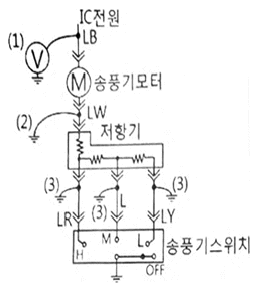
- (1)번과 같이 전압계로 측정할 때 전압이 걸리지 않으면 배터리, 퓨즈, 점화 스위치, 배선의 문제이다.
- 저항기가 모두 단선되면 (3)번과 같이 점프선을 차체에 접지시킨 경우 송풍기가 회전하지 않는다.
- (1)번에서 정상전압이 걸리고 (2)번과 같이 점프선을 차체에 연결할 경우 송풍기 모터는 회전해야 한다.
- 송풍기 스위치를 그림과 같이 OFF한 상태에서 (3)번 위치와 같이 회로를 강제 접지시킬 경우 (1)위치에서 전압을 측정하면 전압이 걸리지 않아야 정상이다.
(정답률: 45%)
86. 자동차 냉방장치 정비 시 매니폴드 게이지 연결에 대한 설명으로 옳은 것은?
- 매니폴드 게이지 중앙의 황색커플링은 진공펌프 또는 냉매 봄베에 연결한다.
- 매니폴드 게이지 적색커플링은 에어컨 장치 저압 측 서비스밸브에 연결한다.
- 매니폴드 게이지 청색커플링은 에어컨 장치 고압 측 서비스밸브에 연결한다.
- R-134a용 냉매용기와 R-12용 냉매용기의 연결 니플(nipple)은 동일한 크기가 사용 된다.
(정답률: 52%)
87. 기동전동기 회전이 느린 경우의 원인으로 옳은 것은?
- 기동전동기 계자코일이 단락되어 자력이 커졌다.
- 배터리 (＋)단자의 접촉이 불량하여 많은 전류가 흐른다.
- 기동전동기 B단자의 접촉이 불량하여 전압강하가 크다.
- 기동전동기 마그네틱 스위치의 풀인 코일에 전류가 많이 흐른다.
(정답률: 59%)
88. 자동차 디지털 LCD 계기판의 특징으로 틀린 것은?
- 작동 시 내부의 액정에 전압이 가해지지 않을 때 빛을 투과시키는 성질을 가지고 있다.
- 마이컴에 의한 액정제어 방식으로 고밀도 제어가 가능하다.
- 표시되는 디스플레이 자유도가 아날로그 방식보다 크다.
- 저전압 저소비전력으로 작동된다.
(정답률: 50%)
89. 12V의 기전력이 인가된 회로에서 저항이 10Q인 경우 10초 동안의 전력량이 모두 열로 소비되었을 때의 열량(cal)은 약 얼마인가?
- 17.28
- 26.28
- 34.56
- 46.46
(정답률: 22%)
90. 직·병렬형 하드타입 하이브리드 자동차 에서 엔진 시동기능과 공전 상태에서 충전기능을 하는 장치는?
- MCU(Motor Control Unit)
- PRA(Power Relay Assembly)
- LDC(Low DC-DC Converter)
- HSG(Hybrid Starter Generator)
(정답률: 54%)
91. 전자 배전 점화장치(DU)의 고장부위 점검사항으로 틀린 것은?
- 크랭크 각 센서를 점검한다.
- 타이밍 로터의 에어캡을 점검한다.
- 점화 1차, 2차 코일의 출력을 점검한다.
- rpm 신호가 ECU로 입력되는지 점검한다.
(정답률: 49%)
92. 번호등에 대한 설치기준으로 틀린 것은? (단, 자동차 및 자동차부품의 성능과 기준에 관한 규칙에 의한다.)
- 등광색은 황색일 것
- 번호등은 등록번호판을 잘 비추는 구조일 것
- 번호등의 휘도기준은 측정점별 최소 2.5cd/m2 이상일 것
- 후미등·차폭등·옆면표시등·끝단표시등과 동시에 점등 및 소등되는 구조일 것
(정답률: 62%)
93. 하이브리드 자동차의 오토스톱(Auto Stop) 기능이 미작동하는 조건과 관계없는 것은?
- 고전압 배터리의 온도가 규정 온도보다 높은 경우
- 엔진냉각수 온도가 규정 온도보다 낮은 경우
- 무단변속기 오일 온도가 규정 온도보다 낮은 경우
- 에어컨이 작동 중인 경우
(정답률: 49%)
94. 제너 다이오드에 대한 설명으로 틀린 것은?
- 정전압 다이오드라고도 한다.
- AC 발전기의 전압조정기에 사용하기도 한다.
- 특정 전압 이상에서는 역방향으로 전류가 흐른다.
- 순방향으로 가한 일정 전압을 제너 전압이라고 한다.
(정답률: 60%)
95. 교류발전기에서 기전력 발생 요소에 대한 설명으로 틀린 것은?
- 로터 코일의 회전이 빠를수록 많은 기전력을 얻을 수 있다.
- 로터 코일에 흐르는 전류가 클수록 기전력이 커진다.
- 자극의 수가 많은 경우 기전력의 변화를 적게 할 수 있다.
- 권수가 많고 도선(코일)의 길이가 짧을수륵 자력이 크다.
(정답률: 25%)
96. 하이브리드 자동차와 관련하여 배터리 팩이나 시스템에서의 유효한 용량으로 정격용량의 백분율로 표시한 것은?
- SOC(State Of Charge)
- PRA(Power Relay Assembly)
- LDC(Low DC-DC Converter)
- BMS(Battery Management System)
(정답률: 45%)
97. 권수가 150회인 코일에 5A의 전류를 흐르게 하였을 때 6×10-2Wb의 자속이 교체하였다면 이 코일의 자기유도 인덕턴스(H)는?
- 1.5
- 1.8
- 2.2
- 3.8
(정답률: 42%)
98. 자동차 계기장치에서 식별부호는 그림과 같으며, 식별색상이 황색인 표시장치는? (단, 제작사가 별도로 정하는 경우는 제외하며 자동차관련 법령상에 의한다.)
- 브레이크 라이닝 마모상태 자동표시기
- 제동장치 고장자동표시기
- 주차제동장치 자동표시기
- 원동기 고장자동표시기
(정답률: 52%)
99. 자동차 에어컨 장치의 구성품 중 어큐뮬레이터 드라이어의 기능으로 틀린 것은?
- 수분 흡수 기능
- 냉매 압축 기능
- 이물질 제거 기능
- 냉매와 오일의 분리 기능
(정답률: 54%)
100. 디젤엔진에서 코일식 예열 플러그에 대한 설명으로 틀린 것은?
- 히트 코일이 노출되어 있어 적열 시간이 짧다.
- 저항값이 작아 직렬로 결선 한다.
- 예열 플러그 저항기를 두어야 한다.
- 코일을 보호 금속 튜브 속에 넣은 형식이다.
(정답률: 47%)